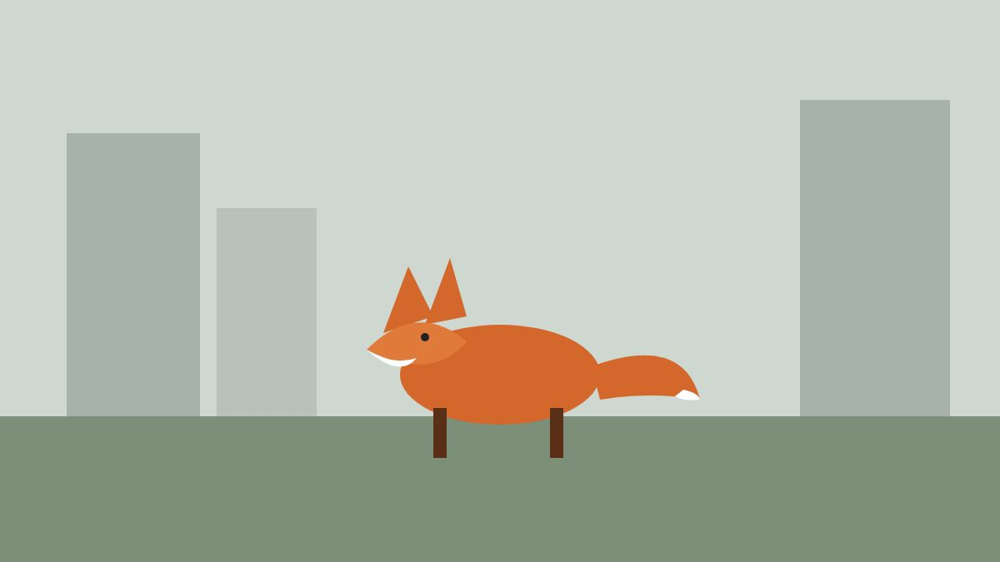

Field Notes on Urban Foxes

City foxes keep smaller territories than country ones and eat almost anything: worms, fallen fruit, the remains of a takeaway. They have learned the rhythm of bin day and the gaps under garden fences.
Researchers who fit them with collars find they cross busy roads with care, wait for the quiet hours, and raise their cubs under sheds a few metres from sleeping people.